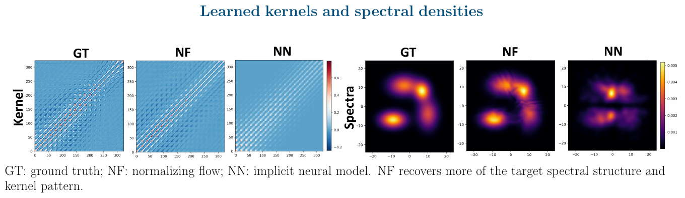
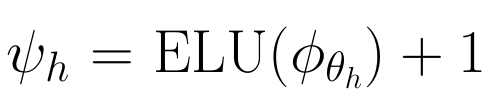
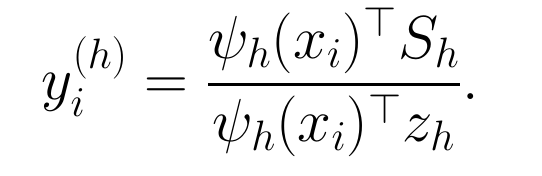
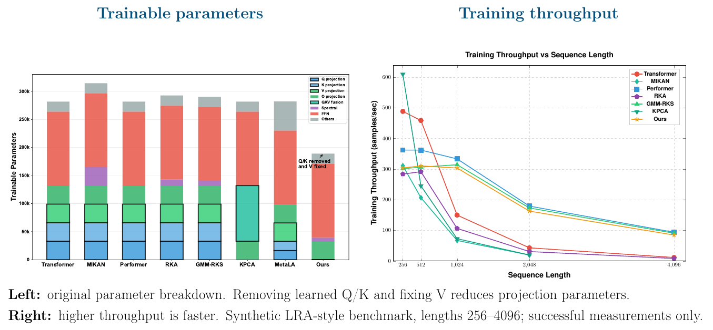

NeurIPS 2026
Flow-based Spectral Kernel Learning for Nonstationary Attention
1 The University of Hong Kong2 National University of Singapore3 Universidad Carlos III de Madrid
* Equal contribution † Corresponding authors
Expressive kernel attention with competitive accuracy and linear-time aggregation.
Adaptive similarities,
simpler projections
A stationary kernel depends on the difference between two inputs. We want similarities that can also depend on each input individually. Dense attention computes pairwise interactions, so its cost grows quadratically with sequence length.
FSKA learns the similarity kernel through a nonstationary spectral density and uses random features to factorize attention. Each head learns its own kernel and uses a fixed value projection. For fixed feature and value dimensions, aggregation cost grows linearly with sequence length.
Learning the attention kernel
Nonstationary spectral features
A joint density over frequency pairs represents similarities beyond functions of the difference between two inputs. The feature map combines sines and cosines evaluated at sampled frequencies.
For a real-valued kernel with the stated normalized spectral probability representation, the signed-feature inner product is an unbiased kernel estimator. The feature dimension is even, with M/2 independent frequency pairs.
Flow-based density learning
A RealNVP normalizing flow maps samples from a standard Gaussian to frequency pairs. Its tractable Jacobian determinant lets us evaluate the learned density. Training combines the task loss with a spectral regularizer.

Fixed values, diverse heads
Query and key projections control similarity. Value projections define the space where information is aggregated. Fixed orthogonal value projections retain complementary subspaces across heads.
Each head learns its own kernel, which sets its attention weights.
Positive features, linear aggregation
ELU plus one produces positive features to avoid signed cancellation. Each head accumulates feature–value products and feature sums, then combines them with each token's features to compute its output.


This avoids constructing the full attention-score matrix. For fixed feature and value dimensions, aggregation cost is linear in sequence length, with per-head cost O(LM dv).
The unbiasedness result applies to the original signed features. It does not automatically extend to the ELU-transformed affinity or normalized attention ratio.
Classification and efficiency
5 of 6
datasets with the highest mean macro-F1
among the methods in the comparison below
Sentence classification
Macro-F1 (%), mean ± standard deviation over three runs. KPCA has the highest mean on RT-Polarity.
| Model | DBPedia | AGNews | TREC | RT-Pol. | SST-2 | SST-5 |
|---|---|---|---|---|---|---|
| Transformer | 98.13 ± 0.15 | 90.43 ± 0.07 | 86.14 ± 0.93 | 70.52 ± 0.45 | 76.07 ± 1.10 | 35.11 ± 1.46 |
| MIKAN | 97.74 ± 0.01 | 91.15 ± 0.24 | 85.47 ± 1.07 | 71.30 ± 0.92 | 76.04 ± 0.86 | 32.84 ± 0.39 |
| Performer | 98.12 ± 0.09 | 90.23 ± 0.31 | 85.70 ± 0.57 | 70.88 ± 0.62 | 77.24 ± 0.41 | 35.92 ± 0.96 |
| RKA | 98.26 ± 0.01 | 90.80 ± 0.28 | 85.56 ± 0.75 | 71.15 ± 0.72 | 77.08 ± 1.46 | 36.10 ± 0.49 |
| GMM-RKS | 96.76 ± 0.21 | 90.58 ± 0.41 | 85.36 ± 0.91 | 71.05 ± 1.02 | 76.81 ± 0.89 | 36.42 ± 0.84 |
| KPCA | 97.59 ± 0.14 | 90.20 ± 0.49 | 85.90 ± 0.96 | 72.16 ± 1.58 | 77.62 ± 1.13 | 36.97 ± 1.36 |
| MetaLA | 97.24 ± 0.15 | 91.14 ± 0.36 | 85.07 ± 1.02 | 70.28 ± 1.71 | 77.03 ± 0.69 | 35.27 ± 1.41 |
| FSKA | 98.33 ± 0.13 | 91.20 ± 0.37 | 86.21 ± 1.02 | 72.08 ± 1.44 | 78.74 ± 1.15 | 38.16 ± 1.40 |
Compared with Transformer, FSKA improves mean macro-F1 from 76.07 to 78.74 on SST-2 and from 35.11 to 38.16 on SST-5.
Fewer projection parameters
Removing learned Q/K and fixing V reduces projection parameters. The figures compare trainable parameters and training throughput as sequence length increases.

Additional results · MNIST ablation study
FSKA retains accuracy with simpler projections. Learning V adds little in this experiment, while direct signed random Fourier features reduce accuracy.
| Model | Q/K | Learn V | Flexible kernel | PRF | Accuracy |
|---|---|---|---|---|---|
| Transformer | Yes | Yes | No | — | 0.8556 |
| Transformer w/o QKV | No | No | No | — | 0.5267 |
| IKAN | Yes | Yes | Yes | No | 0.8656 |
| FSKA | No | No | Yes | Yes | 0.8722 |
| + Direct RFF | No | No | Yes | No | 0.3956 |
| + Learnable V | No | Yes | Yes | Yes | 0.8725 |
The short presentation
The nine-slide deck follows the method from spectral features to linear aggregation, then presents sentence-classification results and efficiency measurements.
Presentation video
Presentation slides
Run the experiments
The repository provides the FSKA implementation and runnable configurations for three experiments.
- Sentence classification. DBPedia, AG News, TREC, RT-Polarity, SST-2, and SST-5.
- Full-document classification. SCOTUS, BBC News, 20 Newsgroups, and arXiv. Documents are processed without truncation or chunking.
- Nonstationary toy regression. Fit FSKA to synthetic data with four smoothly changing regimes.
The sentence classification table above reports mean and standard deviation over three runs from the poster. The repository defaults to five model seeds per experiment and fixes the data and split seed at 42.
Cite this work
@inproceedings{yang2026fska,
title = {Flow-based Spectral Kernel Learning for Nonstationary Attention},
author = {Yang, Zi and Li, Ying and Lancho, Alejandro and Larese, Dar{\'i}o C. and Olmos, Pablo M. and Zhang, Michael Minyi},
booktitle = {Advances in Neural Information Processing Systems},
year = {2026}
}